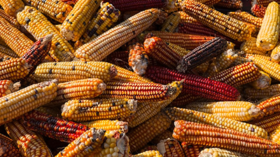

The Value of Money
Money represents power, freedom, and opportunity, yet its true value lies in how it’s used. The pursuit of wealth has shaped civilizations but has also widened inequalities.
Money represents power, freedom, and opportunity, yet its true value lies in how it’s used. The pursuit of wealth has shaped civilizations but has also widened inequalities.

Genetically Modified Organisms (GMOs) in food have sparked global debate. While critics raise concerns about health risks and environmental impact, many scientific studies support the safety of GMOs and highlight their potential to combat hunger, reduce pesticide use, and improve crop yields.
By the year 2100, the world could be drastically different—or eerily similar—depending on the choices we make today. Climate change, AI, space exploration, and biotechnology will reshape how we live, work, and connect.